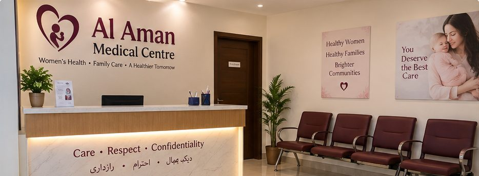
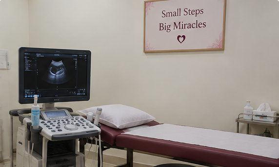

Pregnancy & Antenatal Care
Regular check-ups through each trimester, with time to ask questions and plan for delivery.
- Pregnancy confirmation and first visit
- Routine antenatal check-ups
- Ultrasound at the clinic
- Normal delivery and C-section
Al Aman Medical Centre, Jampur
MBBS, MCPS 10 years' experience Female consultant
Private, respectful care for women: pregnancy and delivery, ultrasound, infertility care including IUI, and gynaecological surgery.
Your consultation and records are kept confidential.

Open 7 days a weekMon–Sat 2–8 pm, Sun 10 am–8 pm
Clinic timings
Monday to Saturday: 2 pm – 8 pm
Sunday: 10 am – 8 pm
Phone & WhatsApp
Dr Fakhra Habib is a Consultant Gynaecologist & Obstetrician with a special interest in infertility care. She sees patients at Al Aman Medical Centre, Jampur.
Over ten years she has trained and worked in major teaching hospitals and served women in government health facilities in peripheral areas, where she saw how much good care close to home matters. She also teaches medical students as a lecturer at D.G. Khan Medical College.
Each consultation begins with listening carefully. Findings and options are explained in plain language so that you can take part in every decision about your care.
A comfortable, private and welcoming environment for your care.
These are illustrative images of the clinic setting.


See Al Aman Medical Centre before your visit: the consultation room, patient rooms and waiting area.
Care for common and complex women's health concerns. What is suitable for you is decided together after assessment.
Regular check-ups through each trimester, with time to ask questions and plan for delivery.
Assessment of concerns such as pelvic pain, discharge or abnormal bleeding, in a private setting.
Step-by-step evaluation for couples trying to conceive, with treatment options including IUI where suitable.
Irregular, heavy, painful or missed periods, assessed to understand the cause.
Diagnosis and long-term management of polycystic ovary syndrome, including lifestyle guidance.
Confidential advice on contraceptive options so you can choose what suits you.
Support for symptoms around menopause, with discussion of the options available.
Preparing your health before pregnancy, including review of existing conditions and medicines.
Check-ups after delivery for your recovery, feeding concerns and family planning.
Procedures are offered after assessment, when they are suitable for you. The benefits, risks and alternatives are explained beforehand.
Regular antenatal check-ups help monitor your health and your baby's growth, and give you a place to raise any worries early.
The number and timing of visits depend on your health and how your pregnancy progresses. You will be advised which tests or scans are needed.
Book a pregnancy visitFirst trimester
Medical history, examination, baseline tests and guidance on diet, supplements and warning signs.
Second trimester
Checks of blood pressure, weight and your baby's growth, with ultrasound or tests where advised.
Third trimester
Closer monitoring, discussion of delivery plans and what to do when labour starts.
After delivery
Your recovery, feeding, emotional wellbeing and future family planning.
Difficulty conceiving can be stressful and deeply personal. Consultations are private and free of judgement.
Every couple's situation is different. Evaluation aims to understand possible causes and explain the options available. Results cannot be guaranteed, and you will always be given an honest picture.
Request a fertility consultationFertility concerns can involve either partner, so assessment usually considers both, starting with a detailed history.
Tests such as blood work or ultrasound may be suggested to guide the next step.
Depending on the findings, options may include medicines, ovulation support or IUI. Each is explained openly, including when referral elsewhere may help.
Advice on preparing for a healthy pregnancy, including managing existing conditions.
The principles behind every consultation at the clinic.
Your concerns and preferences shape the conversation.
Examinations with dignity, and your information kept private.
Findings and options explained in simple language.
Care planned around your history, not a fixed template.
Follow-up visits with Dr Fakhra Habib wherever possible.
Short answers to things patients often ask about.
A preconception visit can review your health, any medicines you take and supplements such as folic acid before you start trying.
Very heavy, painful or irregular periods, bleeding between periods or after menopause, pelvic pain, or difficulty conceiving are all reasons to book a check-up.
PCOS is a common hormonal condition that can affect periods, skin, hair growth and fertility. It is diagnosed after assessment and can be managed over the long term.
Check-ups monitor your blood pressure, your baby's growth and any symptoms. Bring your pregnancy card and previous reports to every visit.
Fertility concerns can involve either partner, so evaluation usually includes both. Tests are chosen after a careful history.
This is general information. Your own care will be based on your individual assessment.
General information about visiting the clinic. For advice about your own health, please book a consultation.
Call or WhatsApp 0335 2575555, or fill in the appointment form on this page. Clinic staff will reply to confirm your date and time.
Monday to Saturday from 2 pm to 8 pm, and Sunday from 10 am to 8 pm.
Yes, ultrasound is available at Al Aman Medical Centre. You will be advised whether a scan is needed at your visit.
Please bring any previous reports, ultrasound scans, prescriptions and a list of medicines you take. If you are pregnant, bring any earlier pregnancy records.
Yes, you are welcome to bring someone with you. You may also speak to the doctor privately for part or all of the consultation if you prefer.
It is generally advisable to see a doctor soon after a positive pregnancy test. If you have pain, bleeding or feel unwell, seek care promptly rather than waiting.
Many couples are advised to seek evaluation after about a year of trying, or sooner in some situations, such as when the woman is older or has irregular periods. The doctor can guide you based on your circumstances.
Yes. Your personal and medical information is treated as private and shared only as needed for your care, or with your permission.
This website and WhatsApp messages are not for emergencies. If you have heavy bleeding, severe pain, fits, leaking fluid, reduced baby movements or other urgent symptoms, go to the nearest hospital emergency department immediately.
If you have visited Al Aman Medical Centre, your honest feedback on Google helps other women and families in Jampur find the care they need.
Please avoid sharing personal medical details in your review.
Opens Google in a new tab.
Fill in a few details and send your request on WhatsApp. It only takes a minute.
Prefer to talk? Call during clinic hours.
Call 0335 2575555Serving women and families in Jampur and the surrounding areas of District Rajanpur.
Al Aman Medical Centre
Near Sehr Hospital, Choti Road
Jampur, District Rajanpur, Punjab
| Monday – Saturday | 2 pm – 8 pm |
| Sunday | 10 am – 8 pm |
Al Aman Medical Centre, Choti Road, Jampur